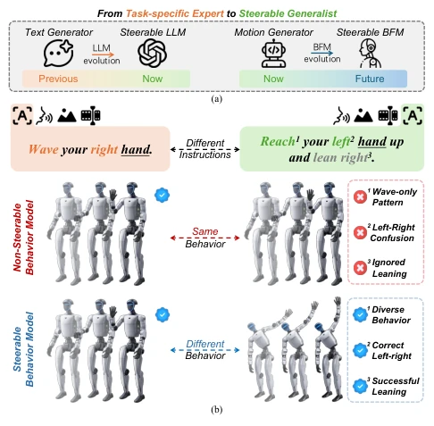
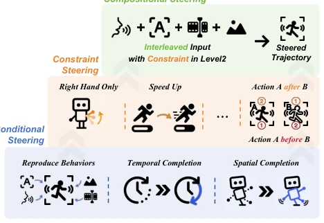
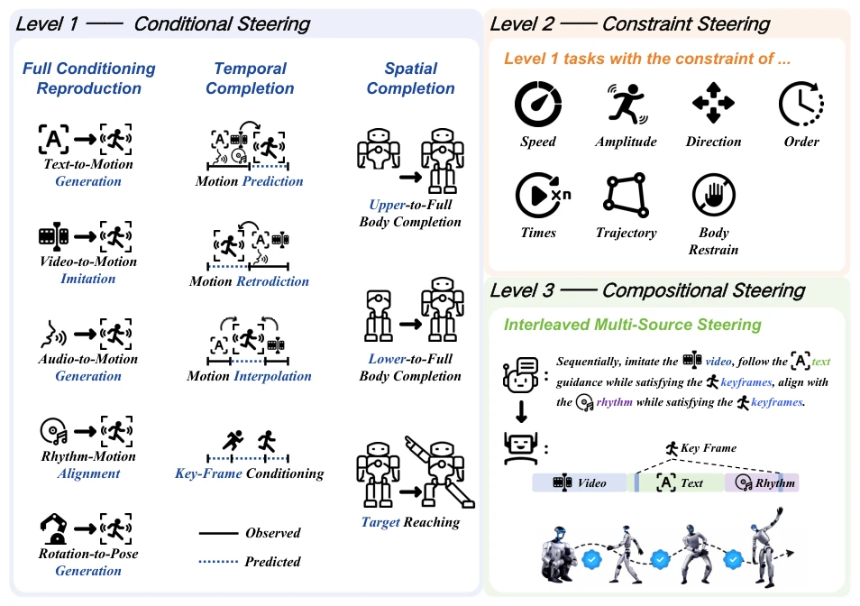
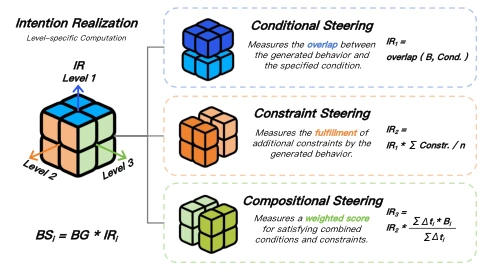
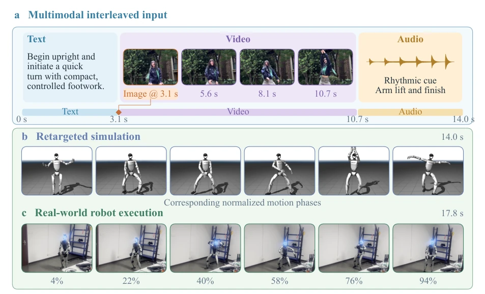
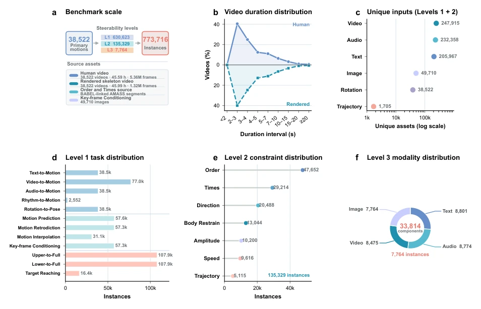
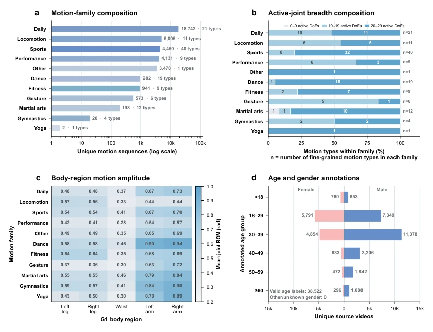

This paper pours cold water on the current frenzied Behavior Foundation Model (BFM) community. Although the industry is busy stacking computing power to build "general-purpose robots", the authors point out incisively: generating actions does not mean understanding human language. This RoboSteer benchmark is very practical, directly popping the illusion that "generation equals control". Existing BFM s are mostly like actors who only recite lines; once users request "walk slower" or "don't move the left hand", they are exposed. However, although quantifying intent realization into three levels is clear, user instructions in reality are often more ambiguous and dynamic; will this benchmark be too "textbook-style"? Additionally, most of the 9 models collapsed directly at Level 3, indicating that current BFM is far from true "interactivity", even less controllable than ChatGPT [1, 22]. This is not only a technical issue but also a lack of evaluation system, worthy of deep thought.
The research motivation stems from the paradigm shift of BFM from "generator" to "interactive interface". Existing work [7, 17] mainly focuses on the quality of behavior generation (e.g., physical plausibility), ignoring whether the model can faithfully execute user intent. In real human-computer interaction, users rarely request unconstrained behavior [14, 30], but need to specify constraints such as speed and body parts. However, existing benchmarks such as HumanoidBench, Mimicking-Bench, etc. [Fig 2a] lack systematic evaluation of "behavior controllability", focusing only on generation quality. Large Language Models (LLM) have evolved to be controllable like ChatGPT [1, 22], but BFM remains at the generation stage. If unable to reliably convert intent into action, BFM is just an advanced dance machine, not an embodied agent. Therefore, it is urgent to establish a unified framework to measure BFM's intent realization capability, fill this key gap, and promote the leap from behavior generation to intent realization.

Figure 1. (a) LLM evolution provides precedent for steerable foun- dation models. (b) Steerable vs. non-steerable behavior models.

Figure 3. Behavioral steerability is built upon behavior generation and progressively evolves from satisfying simple to complex be- havioral specifications.
The core of the method is the RoboSteer benchmark, including data construction and evaluation framework. Data originates from web-level human motion videos, undergoing quality filtering, semantic annotation, human motion reconstruction, and physics-constrained humanoid retargeting, finally verifying executability through simulation tracking. The evaluation system is divided into three levels: Level 1 Conditional Control (full condition reproduction, spatiotemporal completion), Level 2 Constraint Control (speed, amplitude, body constraints, etc. 7 categories), Level 3 Combinatorial Control (multimodal interleaved instructions). Regarding metrics, Behavior Generation score (BG) is proposed to measure generation quality, Behavior Control score (BS) combines Intent Realization degree (IR). IR is calculated based on execution feedback, ensuring that not only do the actions resemble the target, but the intent is also correct. This layered design goes from simple conditions to complex constraints, gradually approaching real interaction needs, providing clear direction for model improvement. The IR calculation considers the cumulative effects across different levels, ensuring the rigor of evaluation.

Figure 4. Overview of the three-level behavioral steerability hierarchy in RoboSteer.

Figure 5. Progressive computation of Intention Realization across three steering levels.

Figure 6. Real-world demonstration of a Compositional Steering task and its model execution. More tasks are provided in the Appendix.
Experiments were conducted on 9 BFM, covering modalities such as text, audio, video. Main findings: 1) Generation capability does not equal controllability, high BG does not mean high BS, gap widens with complexity; 2) Spatial control is weaker than temporal control, models lack sufficient modeling of joint-level spatial dependencies; 3) Body Restraint (Body Restrain) is the hardest, models struggle to associate instructions with specific body parts; 4) Level 3 Combinatorial Control is almost unusable, single modality (e.g., language) has bottlenecks. Results indicate that current BFM has significant shortcomings in fine-grained spatial control and multi-constraint coordination, requiring introduction of finer-grained spatial representation and multimodal input, otherwise difficult to achieve true embodied intelligence. Experiments also revealed the gap between simulation and the real world, emphasizing the importance of physical executability.

Figure 7. Overview of RoboSteer dataset statistics. a, Benchmark scale and associated media assets across the three steerability levels. b, Duration distributions of source human videos and rendered skeleton videos. c, Unique input assets used by Levels 1 and 2, counted once per source asset within this combined scope. The horizontal axis is logarithmic. d, Distribution of Level 1 task instances. e, Distribution of Level 2 constraint instances. f, Modality components used by Level 3 Interleaved Multi-Source Steering.

Figure 8. Dataset composition and potential biases. a, Numbers of unique motion sequences and fine-grained motion types in each motion family. b, Composition of motion types by the median number of active joint degrees of freedom within each family (angular range of motion ≥0.30 rad). c, Joint angular range of motion averaged across the joints of each G1 body region and all sequences in each motion family. d, Age and gender distributions from the source-video annotations.